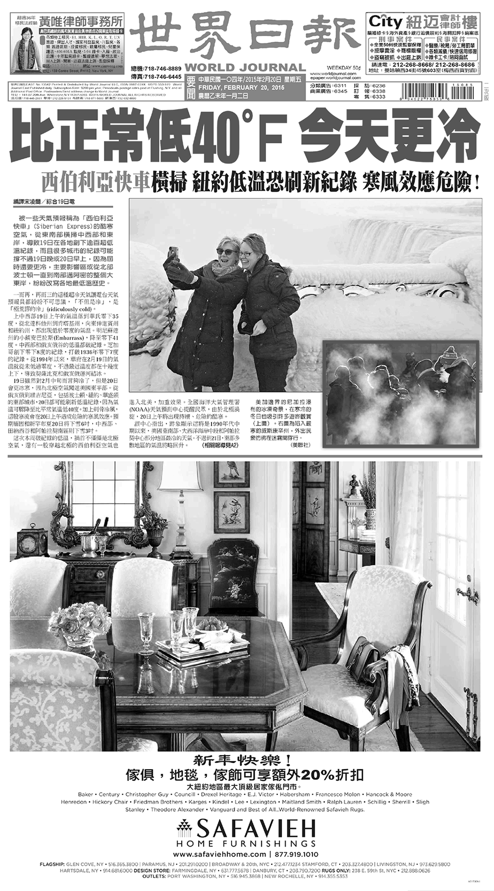
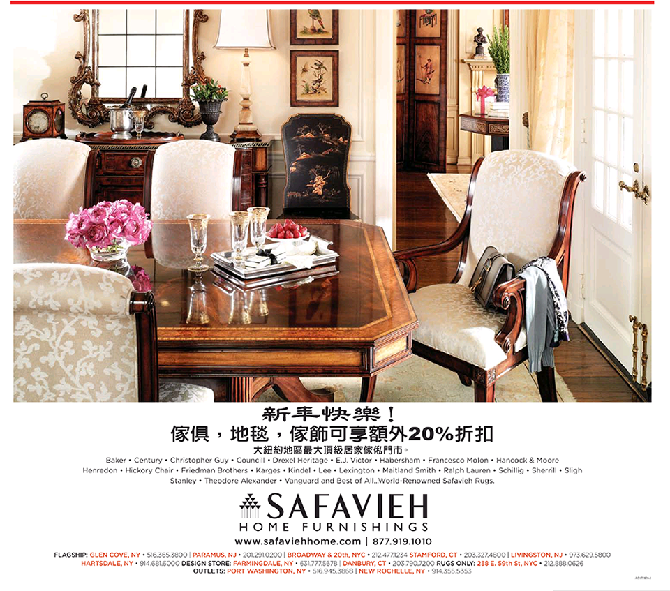
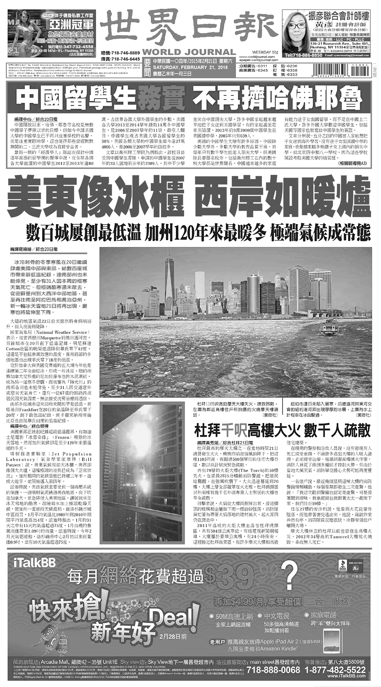

AD: Book Sheraton LaGuardia East Hotel, one of the luxury hotels in the community, right now at 1-888-268-0717
During the spring festival, a great many Chinese will travel abroad; New York recently has become the popular choice of destination.
AD: Doctor Zhiyuan Han (who runs two doctor offices in Flushing and Chinatown), wishes readers Happy Spring Festival
Since Spring Festival in the largest Chinese Holiday most people in the community celebrate, it becomes a chance for advertisers to promote themselves.
HEADLINE: President Obama sends Lunar New Year message, reinforcing the immigration reform
News related to Immigration reform is always atop of the World Journal’s headlines.
Lots of its readers are Chinese expatriates in U.S. on student or work visas, or undocumented workers, are waiting anxiously for a path to citizenship.
AD: Mohegan Sun (one of the largest Casinos in Connecticut) wishes readers all the best of the year of sheep 2015. Visit our Chinese website or contact our Asia-pacific service representatives.
The advertisement shows Mohegan Sun aims to cater for Chinese gamblers. Because of the loss of gamblers and the shrink of gaming industry, major gambler companies are now targeting at Chinese players, attracting them by launching Chinese websites, hiring Chinese-speaking staff, serving free bus from major Chinese population centers on a daily basis.

AD: Wei Huang (Margaret W. Wong) Law Firm provides comprehensive legal services for all matters related to immigration and nationality law; Wong helped Obama’s half-aunt win asylum and a Green card
Among Chinese expatriates in New York, there is a huge demand for immigration attorney and legal services— partly because they are new comers not familiar with the U.S. systems, also because some of them looking for permanent residence need professional assistance.
AD: City Consulting Firm provides accounting and law services for criminal matters and civil matters, including prison bails in 50 states, contract disputes, federal appeals, etc.
Among Chinese expatriates in New York, there is a huge demand for legal services

AD: Safavieh Home Furnishings extends Lunar New Year messages, providing 20% extra discounts on furniture and carpets.
Safavieh, the high-end furnishture brand in U.S. is now looking closely at the China market, as well as that of the Chinese immigrant groups—there is always a need for furniture and house decoration, when people move to a new environment; and meanwhile, more and more Chinese customers would like to pick high-end furniture.

AD: Yangzi Boutique Fitness Studio, providing professional training to burn fat, build shape
Body shaping used to be American-style workouts, but now, it is popular among the younger generation of the immigration communities, who has different understanding of health and beauty with their parents.
AD: Zhen Yan united accounting firm, professional tax and accounting consultations for corporates and individuals
For Chinese immigrants, tax system in U.S. is hard to handle, since they never have had that experiences in their home country.
HEADLINE: Chinese students no longer attracted by glittering names like Harvard and Yale
One major driver for Chinese population immigrating to U.S. is their children’s education. Thus, even if it’s a short blog post from the Economist, the World Journal quoted and put in the headline of the day.
AD: iTalkBB offers $39.99 monthly Internet package
iTalk BB is a global telecom service provider, through which, its users can watch a real-time TV channels in China
AD: Nan Wu E Mi Tuo Fo (Buddhism quotes). Advertisement by U.S. Amitabh Pureland Association
Buddhism culture remains in New York’s Chinese communities. Media such as tv channels, and newspaper, are still main ways of local religious organizations spread their missions.
AD: Zhu Shi united law firm, providing legal services covering all matters related to immigration issues, such as oversea assets, ‘green-card’ marriage
Another typical law service advertisement shows the huge demand of professional assistance among the Chinese immigration groups.
HEADLINE: Texas immigration jail spark prisoner uprising
Immigration-related news is always atop of the World Journal’s headlines.
HEADLINE: China’s corruption crackdown hard hits Las Vegas’s casinos
Though the fact that China’s has fiercely cracked down corruption since last year is not surprising, it’s interesting that the World Journal find a fresh angle to report.
AD:US-Wuxi Chamber of Commence extends New Year greetings to all overseas compatriots
Within the Chinese immigration communities, there is a society of various chambers of commerce, tying and grouping overseas Chinese by their hometowns. Those organizations functioning like Greek Communities in the U.S. are the places people meet and social.
AD:Wang Junyu Law Firm, providing full services of matters related to immigration laws
Another law service advertisement shows the huge demand of professional assistance among the Chinese immigration groups.
AD:Ye Man Law Firm, providing full services of matters related to immigration laws. If you and your friends and family have been struggled with identity issues for years, find us now!
Another law service advertisement shows the huge demand of professional assistance among the Chinese immigration groups.
Headline:China to change requirements for second-home purchases in March
The policy change might affect their assests overseas in China.
AD: New York Life Insurance Company invites you to better manage your money and plan for future
Insurance companies look closely to the market among immigrant groups.